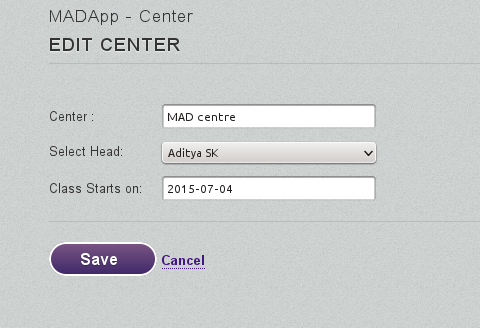

Set Center Start Date
The Center Management Page
First, get to the Center Management Page - this has all the necessary pages under.
Login > Ed Support > Center Management
Click Manage on the Center you want to set the start date for.

Click on Edit Center Details - the 1st step.

Now edit the 'Center Starts on' field to set the start date. Date should be in the 'YYYY-MM-DD' format - but if you click on the field, you'll be given a calander so you can chose the date using a UI.
Click on the Save button once done.